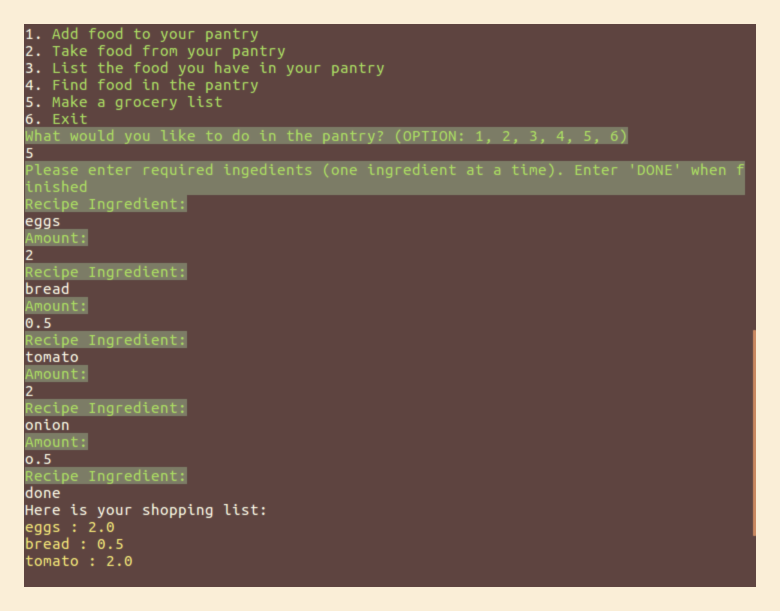

This application was developed in pair with Jake Metz.
Our application solves the problem the following problems:
- what ingredients to buy for some recipe without need af phisically searching your pantry?
- what can be cooked using just the ingredients you’ve got?
- minimising the food waste

The project is implemented as a terminal application which has the following modules:
- Pantryapp: Creates an empty list of items in the pantry on the beginning of session, greets the user and prompts for options to choose. Depending on the user’s choise the methods of one or another module are executed.
- Add_food: Asks user for the name of the food he wants to add and the amount of this food. If the item is already in the list, the application adds the amount to appropriate item. If the item is not in the list it adds it to the list along with the amount.
- Take_food_out: Asks user for the name of the food he wants to take out of the pantry and the amount of this food. If the item is in the list, the application deducts the amount for appropriate item. If the item is not in the list the system warns the user. If the amount of certain product after taking out is 0 the system removes the item from the list.
- List_food: Shows inventory of food items in the pantry.
- Find_food: Asks user for the name of the food he is checking for and if it’s available it’s amount is shown on the screen. Otherwise the system shows the message that there is no such an item in the pantry.
- Shopping_list: Asks the user to type the ingredients names from the recipe and their amounts. After user responds he has finished the system shows on the screen the list of items in the shopping list along with their amounts.
The data structure used for the items in the pantry and ingridients lists is hash (item name as a key and amount as value).
The following 3rd party components have been used in the project: